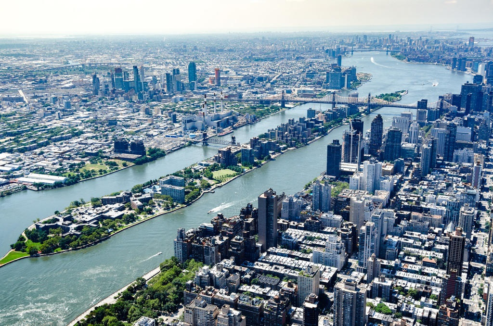
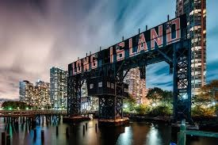
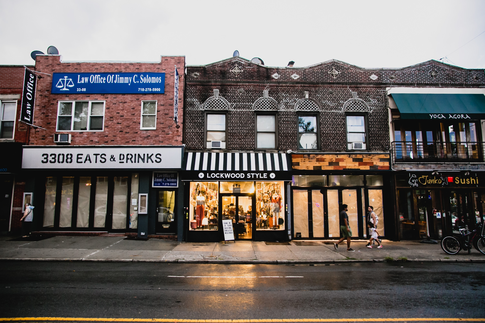
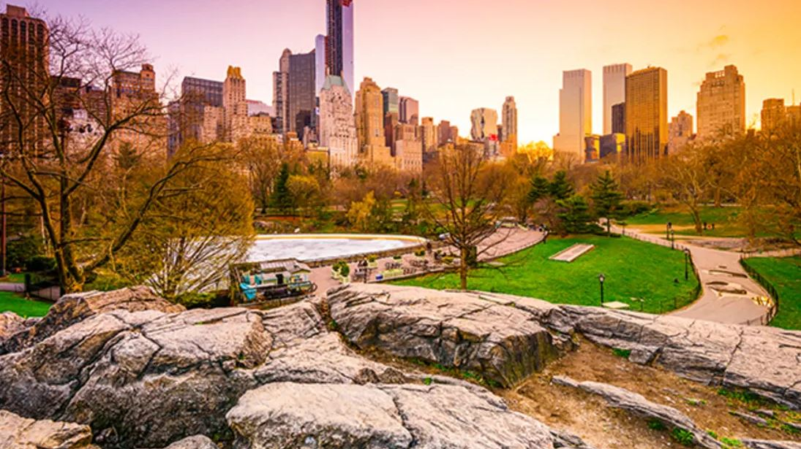
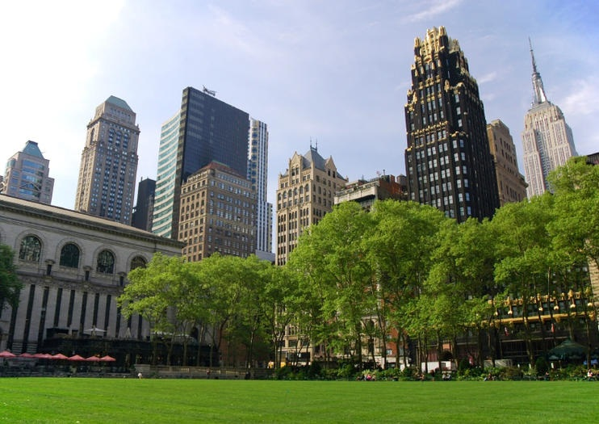
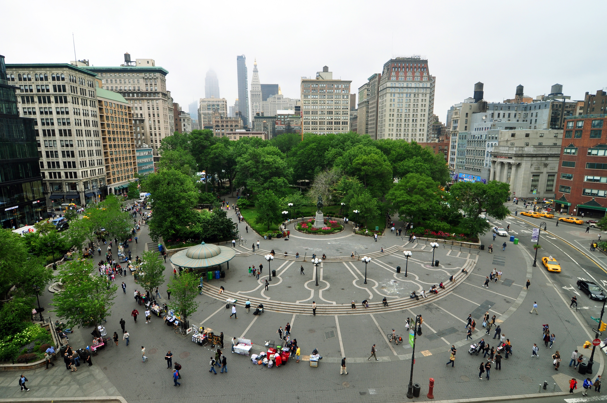
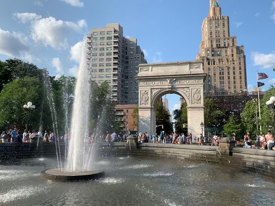
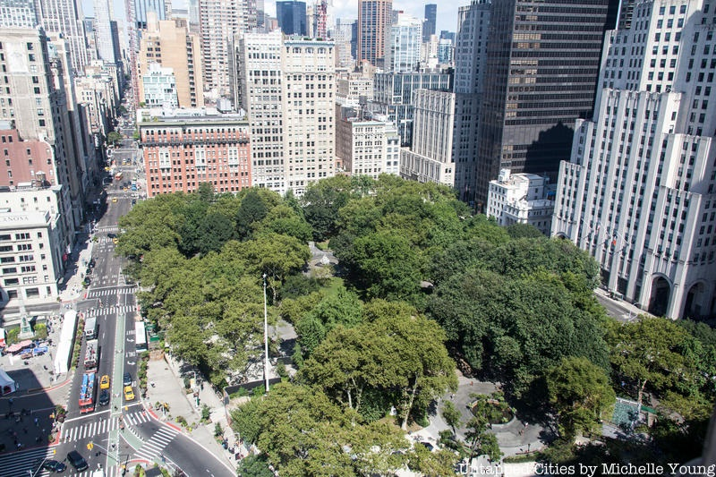

Some Cool Places in The City

Roosevelt Island is a relatively unknown place, it's an island between Manhattan and Queens in the East River. It used to be mostly hospitals but has since been mostly converted into housing.

Long Island City is the one of the westernmost neighbothoods in queens. It used to be mostly industrial, now it's mostly housing.

Astoria is a residential neighborhood in the North western part of Queens, it has great resteraunts and stores. It was originally called Hallet's Cove after its first land owner.

Central park is one of the most famous parks in the entire world. It's One and a hald square miles carved out of one the desnest parts of the city to make room for a very well maintained park.

Bryant Park is one of the main parks in manhattan, unlike central park, it's entirely privatley operated. It's right next to the NYC Public Library, and it's home to the Christmas Village and the ice rink in the winter.

Union Square Park is a park located at the intersection of Park avenue and Broadway. It's a famous park partly due to the fact that it is a connection of various famous neighborhoods like Chelsea, Greenwhich and East Village.

Washington square park is best known for its distinct archwat and its fountain in the center. Washington square park still has one of the original hanging trees, and it used to be where much of the harshest sweatshops were located. Now it's mostly a hub for NYU students.

Madison square park is a park located where 5th avenue and broadway intersect. It's named after James Madison and is sort of the predecessor to Madison Square Garden.